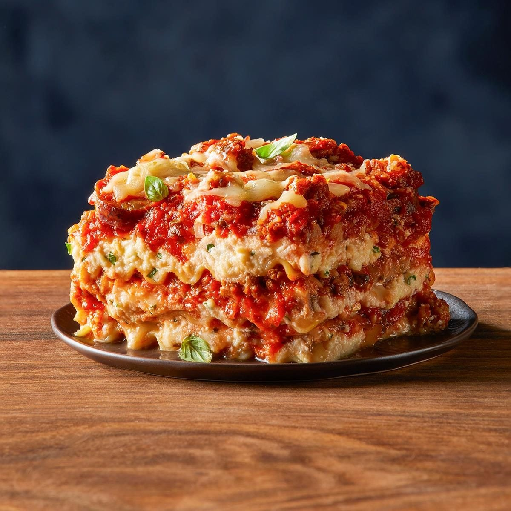

Lasagna
Home
Lasagna

Lasagna is one of the most iconic and universal dishes of italian cuisine,
recognized for its comforting structure of layers of pasta,sauce, and melted cheese.
Ingredients
Bolognese sauce (meat)
- 500 g to 1 kg ground meat (beef and pork blend)
- 1 medium onion, chopped
- 2 to 3 cloves of garlic, minced
- 1 carrot and 1 celery stalk, diced (optional but traditional)
- 800 g crushed tomatoes, tomato purée, or tomato sauce
- A splash of red wine (optional)
- Olive oil, salt, pepper, and herbs to taste (oregano, basil, or bay leaf)
Bechamel sauce
- 50 g butter
- 50 g all-purpose flour
- 500 ml whole milk
- Pinch of nutmeg
- Salt and pepper to taste
Assembly
1.Prepare the meat sauce (Bolognese)
- Saute the vegetables: Chop the onion, garlic and carrot, and bronw them in
a pan with olive oil.
- Cook the meat: Add the ground meat (a mix of pork and beef) and cook until browned.
2. Prepare the bechamel sauce
- Melt the butter in a saucepan over medium heat.
- Add the flour and whisk continuously for 1-2 minutes to form a roux.
- Gradually add the milk while whisking to avoid lumps.
- Cook until the sauce thickens, then season with salt, pepper, and a pinch of nutmeg.
3. Cook the pasta
- Prepare the sheets: If using dry pasta, boil it in plenty of salted
water following the package instructions.(remove it slightly
early so it doesn't get too soft).
4. Assemble the lasagna
- Layer the ingredients: In a baking dish, start with a layer of meat
5. Bake the lasagna
- Preheat the oven to 180°C (350°F).
- Cover the dish with aluminum foil and bake for 25-30 minutes.
- Remove the foil and bake for an additional 10-15 minutes until the top is golden and bubbly.
Related Recipes
Return to Home